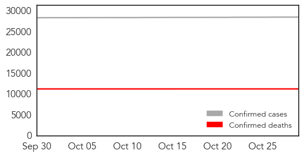

30 Day Trends
Web: 4 alerts, 0 warnings
Twitter: 13 alerts, 0 warnings
3 new deaths (11299 total)
158 new cases (28546 total)
Top Articles:
- 0.998
- Study: Funerals Were Prime Places for Ebola Spread
- 0.998
- The Politics Behind The Ebola Crisis – Analysis
- 0.998
- ICG: The politics behind the Ebola crisis
- 0.962
- Guinea Records Three New Cases Of Ebola, Brings Total To Nine
- 0.937
- 67% of the people on Earth have this 'incurable' viral infection
- 0.899
- Like her father, Vanessa Kerry is reporting for duty. Her mission: Preventing the next outbreak.
- 0.880
- No good deed goes unpunished: After Ebola, Sierra Leone’s brave burial workers rejected, fear bleak future (PHOTOS)
- 0.847
- A fictional island, a cyclone and tough questions: how aid workers prepare for disaster
- 0.836
- Sierra Leone News: Guinea is a threat to Sierra Leone’s ebola freedom-CEO Palo Conteh « Awoko Newspaper
- 0.820
- Rare Psychological Support was Critical for Ebola Patients
- 0.805
- Ebola one year later
- 0.774
- US$1.7bn to Build Resilient Health System
- 0.734
- Cleveland Clinic unveils list of the 10 most important medical innovations for 2016
- 0.707
- Infectious Disease Cyber Detectives Keep Governments Accountable
- 0.686
- Why I cannot tell 'the African story'
- 0.681
- FG Mulls Regional Centre for Disease Control , Articles
- 0.632
- WHO gets it wrong again: As with SARS and H1N1, its processed-meat edict went too far
- 0.568
- LIBERIA: Dozens Of Orphans In West Point Receive Food And Clothing From More Than Me
- 0.537
- People already uses tablets as �a TV for every room in the house so Samsung built one worth watching
Top Tweets:
- 0.997
- ebola ebola virus symptoms treatment and prevention webmd - https://t.co/W8O3ayghKD ebola
- 0.991
- Key Messages - Ebola Virus Disease West Africa - https://t.co/EtYnNR5tXa ebola
- 0.975
- Virus Ebola: Medicago obtient un contrat du gouvernement canadien - https://t.co/F8XsyLehVZ ebola
- 0.958
- Deforestation 'may have started west Africa's Ebola outbreak' - https://t.co/M2oQjCNnJh ebola
- 0.957
- Is ebola a lytic or lysogenic virus - https://t.co/7USlEcP2ry ebola
- 0.935
- Ebola cases - https://t.co/Gf4OHWrPDs ebola
- 0.928
- Penn Study Blocks Ebola Virus Budding by Regulating Calcium Signaling - https://t.co/bxnwVC3b1N ebola
- 0.928
- No good deed goes unpunished: After Ebola Sierra Leone's brave burial workers ... - Mail & Guardi... https://t.co/Vn30oqFJi2 ebola EVD
- 0.918
- MERS Ebola bird flu: Science's big missed opportunities - BusinessWorld Online Edition https://t.co/kgphMbOg90 ebola EVD
- 0.915
- Guinea records new cases of Ebola - https://t.co/WylLNuC6h4 ebola
- 0.910
- Deforestation 'may have started west Africa's Ebola outbreak' - The Guardian https://t.co/47b4UMGcAk ebola EVD
- 0.908
- Guinea Agribusiness: Sector recovering after Ebola epidemic - https://t.co/j8gyDeGrb6 ebola
- 0.902
- Dean to discuss world response to Ebola epidemic - https://t.co/To2b1Zy8Zq ebola
- 0.901
- 3 New Cases of Ebola Emerge in Guinea - https://t.co/It5bfXxOBh ebola
- 0.898
- No good deed goes unpunished: After Ebola Sierra Leone's brave burial workers rejected fear ... - https://t.co/epiIbG9wpg ebola
- 0.892
- Three new Ebola cases confirmed in Guinea - https://t.co/bt9yzRF0jT ebola
- 0.887
- Ebola patient is in isolation after Relapse - https://t.co/MBpFzsymMe ebola
- 0.886
- Press Statement of the 553rd PSC meeting on Ebola and post-Ebola recovery efforts in the most ... - https://t.co/AcGXGw24z3 ebola
- 0.879
- Three new cases of Ebola recorded in Guinea - https://t.co/cqEZKnL3dC ebola
- 0.872
- Guinea records 3 new cases of Ebola brings total to 9 - https://t.co/18hFwnwexk ebola
- 0.869
- Ebola nurse is awarded medal for West Africa work - https://t.co/jhVCdlTGEp ebola
- 0.868
- Ebola Warriorss - https://t.co/eeJH0QODxm ebola
- 0.868
- Ebola Naachii - https://t.co/WUAC74Cz4l ebola
- 0.868
- 3 New Cases of Ebola Emerge in Guinea | 9 in Total Infected - https://t.co/NUOh4BY6QO ebola
- 0.859
- Liberia: Gender Ministry Supporting 4000 Ebola Orphans - https://t.co/JaGy2bTmWr ebola
- 0.851
- Rare Psychological Support was Critical for Ebola Patients - https://t.co/eW8XWoODcd ebola
- 0.850
- Guinea records three new cases of Ebola brings total to nine - Reuters https://t.co/fa2YjU9lrD ebola EVD
- 0.843
- Aethlon Medical's (NasdaqCM:AEMD) Biofiltration Platform Tackles Everything from Ebola to ... - https://t.co/U36mpK4wpr ebola
- 0.837
- RT: tropmed15 Dr Plucinski shows Ebola epidemic in Guinea impeded malaria care delivery https://t.c…
- 0.827
- Guinea records three new cases of Ebola brings total to nine - https://t.co/nUyLKkTJwl ebola
- 0.827
- Guinea records three new cases of Ebola brings total to nine - https://t.co/AgSF4K6OFw ebola
- 0.824
- YWCA Identifies With Ebola Widow Widowers - https://t.co/ItAm9Aop3P ebola
- 0.823
- America's Ebola Panic - https://t.co/mvmPk7wdJw ebola
- 0.812
- Man tested for Ebola in La Coruña - https://t.co/LYkM04EY9k ebola
- 0.805
- Ebola volunteers needed - New Vision https://t.co/gi8MB2YksO ebola EVD
- 0.801
- Ebola Lalala Song Mp3 - https://t.co/V47sKIY2h2 ebola
- 0.791
- Is Ebola Making a Comeback? - https://t.co/ZS1OGJuwS1 ebola
- 0.780
- Ebola Medal awarded to Weston-super-Mare nurse awarded for service in West Africa - https://t.co/UzvD6GUcWM ebola
- 0.771
- More than 300K passengers have now undergone exit screening at international airports in the 3 Ebola affected countries.
- 0.764
- Working in an Ebola Protection Suit - https://t.co/nW6zbij6t0 ebola
- 0.758
- South reassures Bio of zero Ebola - https://t.co/qNCovnoA6v ebola
- 0.757
- Study: Funerals Were Prime Places for Ebola Spread - MedPage Today https://t.co/TImAGbporO ebola EVD
- 0.757
- Ebola: Expert tasks Nigerians on hygiene - https://t.co/s9qAr10iHF ebola
- 0.752
- A Conversation With - Abu Kamara Ebola Active Case Finder - https://t.co/6GauAanJ0c ebola
- 0.751
- Three new Ebola cases recorded in Guinea - https://t.co/WVkbuVW1Ub ebola
- 0.730
- Study: Funerals Were Prime Places for Ebola Spread - https://t.co/bd2aui4GSr ebola
- 0.727
- uk house of commons committee investigates ebola response. another white wash? - https://t.co/7vcr6dIia2 ebola
- 0.727
- The Politics Behind The Ebola Crisis – Analysis - https://t.co/inIW1Kg3W3 ebola
- 0.727
- Aethlon Medical's Biofiltration Platform Tackles Everything from Ebola to Cancer: CEO James Joyce - https://t.co/8cUZP15zUE ebola
- 0.726
- Watchdog Says Army Ebola Contract Needs More Oversight - https://t.co/33CuKg1Jb2 ebola
Showing top 50 tweets...
Web/News Articles

Tweets

Human Impact
Article Locations

Article Confidences